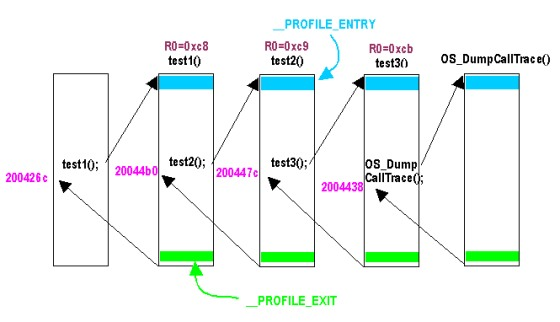

#include <nitro/os.h>void OS_DumpCallTrace( void );
None.
None.
Displays function call trace information.
It displays the trace information that is present at the time it is called. If you are using a thread system, it will display information for the current thread. To display information for a particular thread, use the OS_DumpThreadCallTrace function.
The following is a description of trace information in the case of stack mode.
Display Example:
The example indicates that currently,OS_DumpCallTrace: lr=0x02004438
test3: lr=0x0200447c, r0=0x000000cb
test2: lr=0x020044b0, r0=0x000000c9
test1: lr=0x0200426c, r0=0x000000c8OS_DumpCallTraceis called, trace information is displayed, and the function returns the address0x2004438. Before that,test3was called, and the address0x2004447cwas returned. Before that,test2was called, and the address0x20044b0was returned. Before that,test1, was called, and the address0x200426cwas returned. (The display ofr0is optional.)

The following is a description of trace information in the case of log mode.
Display Example:
The example indicates that currently,OS_DumpCallTrace: lr=0x02004438
test3: lr=0x0200447c, r0=0x000000cb
test2: lr=0x020044b0, r0=0x000000c9
test1: lr=0x0200426c, r0=0x000000c8
test3: lr=0x0200447c, r0=0x000000cb
test2: lr=0x020044b0, r0=0x000000c9
test1: lr=0x0200426c, r0=0x000000c8OS_DumpCallTraceis called, trace information is displayed, and the function returns the address0x2004438. Additionally, before this function was called, of the functions that were compiled with theprofilefeature ON,test1->test2->test3->test1->test2->test3were entered, in this order. However, which function called what function cannot be determined.
Concerning R0 – R3 register display: Including this information in the function call trace buffer is optional. Including one register costs 4 additional bytes in the buffer for each function call. Including the 4 registers R0 – R3 costs 16 additional bytes for each function call. The R0 that is displayed is the value at the time that the function is called. In the case of C function arguments, it is the first argument. R1 is the second argument, R2 is the third argument, and R3 is the fourth argument. In the case of functions that do not take these arguments, these arguments are indeterminate values that have no special meaning. R0 and subsequent information will not be displayed for calls to OS_DumpCallTrace or OS_DumpThreadCallTrace themselves.
If this function is compiled for debugging, it functions properly. However, if compiled for the final ROM version (FINALROM) library, it does not do anything.
If an accurate display of all information takes priority over speed, as it does in this function, we recommend temporarily setting the display to blocking mode. See the OS_SetPrintBlockingMode function for further details.
OS_InitCallTrace
OS_DumpThreadCallTrace
OS_SetPrintBlockingMode
2009/04/03 Added description of blocking mode.
2004/04/22 Added description of stack mode and log mode.
2004/04/13 Initial version.
CONFIDENTIAL